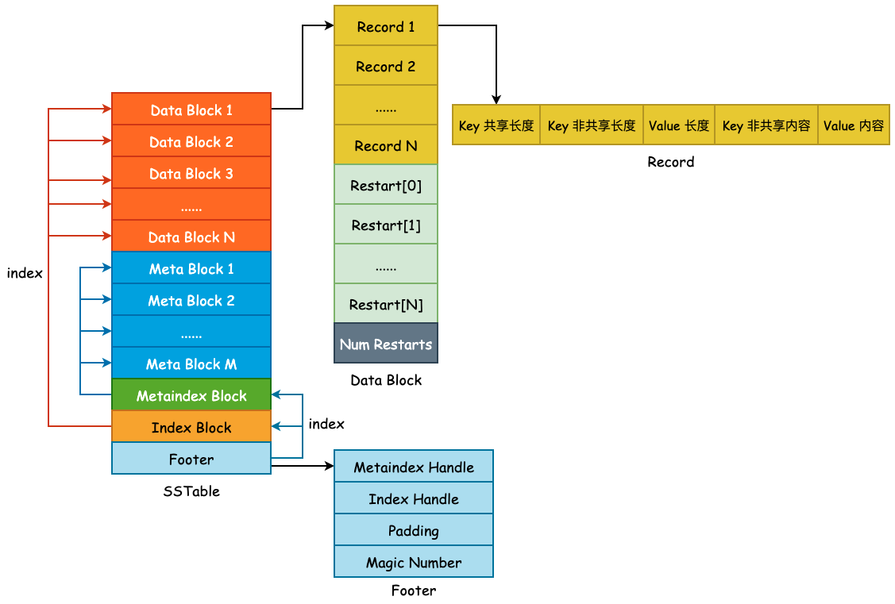
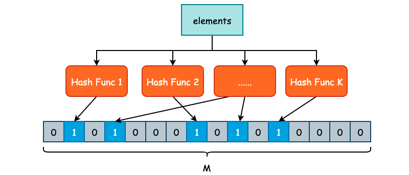

SSTable——Meta Block

本节描述 SSTable 第二个关键组成部分，Meta Block。Meta Block 存在的目的就是为了优化 SSTable 的读取性能，leveldb 使用 Bloom Filter 作为 Filter 的具体实现，用于快速判断某一个 User Key 是否存在于当前查找的 SSTable 中。若 Bloom Filter 给出了 false 的答案，那么待查找 User Key 必然不在当前 SSTable 中。若给出了 true 的答案，待查找 User Key 也不一定会在当前 SSTable 中，因为 Bloom Filter 存在“假阳性（False Positive）”的可能。
1. Bloom Filter
Bloom Filter 又称之为布隆过滤器，是一种空间利用率非常高的数据结构，使用位数组（Bit Array）简洁地表示一个集合，并使用不同的哈希函数将元素映射到这一位数组表示的集合中，从而快速判断元素是否存在于当前集合中。
Bloom Filter 的高效性是有代价的，当我们判断一个元素是否在集合时，有可能会把不属于这个集合的元素误认为属于这个集合，这其实就是常说的“假阳性”（False Positive）。假阳性出现的根本原因就是哈希碰撞，尽管 Bloom Filter 会使用不同的哈希函数，但是由于是把无限的元素映射到有限集合内，出现碰撞的情况在所难免。
因此，Bloom Filter 并不适用于“绝对准确”的场景，而适用于能够容忍一些错误的情景下，比如爬虫系统的 URL 去重、缓存系统的前置判断等。

如上图所示，我们定义了 K 个不同的哈希函数，同时底层位数组的长度为 M。对于每一个需要被添加至 Bloom Filter 的元素，都需要经过 K 次哈希函数的计算，得到 K 个哈希结果。每一个结果都需要被映射到 [0, M-1] 这一区间内，并将位数组对应的位置置为 1。
在判断某一个元素 E 是否存在集合时，同样对 E 进行 K 次哈希计算，并映射到 [0, M-1] 区间内，如果每一个位置的值都是 1 的话，那么 Bloom Filter 就认为 E 在这个集合中，反之 E 不在集合中。
由于 Bloom Filter 使用了 K 个不同的哈希函数，减少了哈希碰撞的概率，因此，Bloom Filter 虽然会存在假阳性的情况出现，但是出现概率并不高。
假设位数组的大小为 M，用户插入数据总量为 N，并且存在 K 个哈希函数，为了获得比较好的过滤表现，K 的取值应为 ln2 * (M/N)。在错误率不大于 E 的情况下，M 至少应该为 N * lg(1/E) 才能在有 N 个元素的情况下表现良好。
2. Filter Policy
虽然 leveldb 使用了 Bloom Filter 作为 Filter Policy 的具体实现，但是 leveldb 为了能够让用户自定义过滤器，仍然定义了 FilterPolicy 这个接口，该接口一共只有 3 个方法:
class LEVELDB_EXPORT FilterPolicy {
public:
virtual ~FilterPolicy();
/* 返回过滤策略的名称 */
virtual const char* Name() const = 0;
/* 将 n 个 User Key 添加至 dst 中 */
virtual void CreateFilter(const Slice* keys, int n,
std::string* dst) const = 0;
/* 判断 key 是否在 filter 集合中 */
virtual bool KeyMayMatch(const Slice& key, const Slice& filter) const = 0;
};
BloomFilterPolicy 则是 FilterPolicy 的具体实现，比较重要的就是其构造函数，决定了位数组的 M 大小和哈希函数 K 的个数:
class BloomFilterPolicy : public FilterPolicy {
public:
explicit BloomFilterPolicy(int bits_per_key) : bits_per_key_(bits_per_key) {
k_ = static_cast<size_t>(bits_per_key * 0.69); // 0.69 =~ ln(2)
if (k_ < 1) k_ = 1;
if (k_ > 30) k_ = 30;
}
其中 bits_per_key 表示为每个 key 所分配的位数， 简单来说就是 M/N 的值，这个值只需要大于 1.44 Bloom Filter 就可以得到良好的工作表现。如果存储空间足够的话，bits_per_key 通常取 10，此时错误率大约在 1%。K 的计算实际上就是 ln2 * (M/N)，由数学推导而来。
3. Filter Block
Filter Block 其实就是 Meta Block，使用 Filter Block 的原因在于这个名称更容易理解 Meta Block 的作用到底是什么。在前面一节中我们已经明白了 Data Block 是由 BlockBuilder 所构建的，包含了前缀压缩和重启点这两个非常重要的概念。Filter Block 则是由 FilterBlockBuilder 所构建的，其中就会包含最为重要的 FilterPolicy。
FilterBlockBuilder 的定义也并不复杂，主要有 3 个方法:
StartBlock(): 开始构建新的 Filter Block。AddKey(): 添加一个新的 key，将在TableBuilder中被调用。Finish(): 结束 Filter Block 的构建，并返回 Filter Block 的完整内容。
完整类定义如下:
class FilterBlockBuilder {
public:
explicit FilterBlockBuilder(const FilterPolicy*);
FilterBlockBuilder(const FilterBlockBuilder&) = delete;
FilterBlockBuilder& operator=(const FilterBlockBuilder&) = delete;
/* 开始构建新的 Filter Block */
void StartBlock(uint64_t block_offset);
/*添加一个新的 key，将在 `TableBuilder` 中被调用*/
void AddKey(const Slice& key);
/*结束 Filter Block 的构建，并返回 Filter Block 的完整内容*/
Slice Finish();
private:
void GenerateFilter(); /* 构建一个 Filter */
const FilterPolicy* policy_; /* filter 类型，如 BloomFilterPolicy */
std::string keys_; /* User Keys，全部塞到一个 string 中 */
std::vector<size_t> start_; /* 每一个 User Key 在 keys_ 中的起始位置 */
std::string result_; /* keys_ 通过 policy_ 计算出来的 filtered data */
std::vector<Slice> tmp_keys_; /* policy_->CreateFilter() 的参数 */
/* filter 在 result_ 中的位置，filter_offsets_.size() 就是 Bloom Filter 的数量 */
std::vector<uint32_t> filter_offsets_;
};
在阅读具体实现之前需要先理清 Filter Block 的具体格式，在 doc/table_format.md 中有给出相应的说明。
首先，Filter Block Builder 的作用就是对 SSTable 中 Data Block 的所有 User Key 建立布隆过滤器，并将结果（以 string 保存）写入到 Filter Block 中。如果说我们把所有的 User Key 都放在一个 Bloom Filter 中的话，按照 bits_per_key 为 10 来计算的话，就有如下计算过程:
假设 User Key 和 User Value 的平均长度为 32 字节，再加上辅助的 varint 字段，一条记录假设占用 70 字节的长度。一个 SSTable 的默认大小为 2MB，那么就可以存放 2 * 1024 * 1024 / 70，约为 3 万条记录。也就是说，布隆过滤器底层使用的位数组长度为 30000 * 10 = 300000，大约为 300KB。
在查询 SSTable 中，首先会去 Bloom Filter 中判断待查找 User Key 是否在当前 SSTable 中，那么就需要将这 300KB 的 Filter Result 全部读取到内存中进行判断，而常见的 I/O Buffer Size 大小为 4KB，也就是说，需要多次 I/O 才能将数据读取至内存。
为了减少 I/O 时间，我们完全可以将单一的 Bloom Filter 划分成多个 Bloom Filter（“分区索引”的思想），每一个 Bloom Filter 只负责一部分的 User Key，并且由于 User Key 在 SSTable 中是有序存储的，因此可以很方便地建立 Filter Result 的索引。这其实就是 Filter Block 和 Metaindex Block 所做的事情。
leveldb 采用的是按照固定条数进行划分，目前划分的条数为 2KB，也就是针对 Data Block，每 2KB 条 User Key + User Value 就会建立一个 Bloom Filter Result。是连续追加的，如下图所示:

这里再对 keys_、start_ 、result_ 以及 filter_offsets_ 做一个简单的解释。leveldb 中在存储 User Key 的时候，很少使用 vector，基本上都是使用 string 进行压缩存储的。因此，我们就需要使用一个额外的数组来保存各个 sub string 的索引，要不然我们也不知道一个 User Key 从哪里开始哪里结束。start_ 和 filter_offsets_ 就是干这个事儿的，前者保存的是各个 User Key 的偏移，后者保存的是各个 filter 的偏移。
比如说我们想要获取 keys_ 中的第 i 个 Key，就可以使用:
const char *base = keys_.data() + start[i]; /* 取得第 i 个 key 的起始地址 */
size_t length = start_[i + 1] - start_[i]; /* 取得第 i 个 key 的长度 */
Slice key = Slice(base, length); /* 通过 Slice 构造 key */
3.1 Filter Block 的写入过程
Filter Block 通过 FilterBlockBuilder::AddKey(const Slice& key) 将 User Key 添加到 keys_ 字符串中，需要注意的是，此时的 User Key 为打包之后的 InternalKey，也就是在尾部追加了 Sequence Number | Value Type 的结果，InternalKey 的格式可见 leveldb 中的 varint 与 Key 组成。
void FilterBlockBuilder::AddKey(const Slice& key) {
Slice k = key;
/* 注意这里是 keys_.size()，而不是 key.size()，
* 记录的是每一个 key 在 keys_ 中的起始地址 */
start_.push_back(keys_.size());
keys_.append(k.data(), k.size());
}
将全部的 Internal Key 写入完毕以后，TableBuilder 将会调用 StartBlock 开始构建 Filter Block。此时需要将 Data Block 的结束偏移量传入，以便 Filter Block 计算到底需要多少个 Bloom Filter:
void FilterBlockBuilder::StartBlock(uint64_t block_offset) {
/* block_offset 可以认为是 Data Block 的结束偏移量，kFilterBase 的值其实就是 2048，
* 即 2KB，filter_index 就表示需要创建多少个 Bloom Filter */
uint64_t filter_index = (block_offset / kFilterBase);
assert(filter_index >= filter_offsets_.size());
/* filter_offsets_ 用于保存每个 Bloom Filter 的起始偏移量，因为每一个
* Bloom Filter 的长度可能是不同的，虽然 base 大小为 2KB，但是 User Key 的长度不定 */
while (filter_index > filter_offsets_.size()) {
GenerateFilter();
}
}
GenerateFilter() 方法用于构建一个具体的 Filter，其内部将会调用 policy_->CreateFilter 创建一个布隆过滤器，并将结果位数组（以 string 保存）返回。
void FilterBlockBuilder::GenerateFilter() {
/* 获取 key 的数量 */
const size_t num_keys = start_.size();
/* 如果 num_keys 为 0 的话，直接压入 result_.size() 并返回 */
if (num_keys == 0) {
filter_offsets_.push_back(result_.size());
return;
}
start_.push_back(keys_.size()); // Simplify length computation
/* tmp_keys_ 主要的作用就是作为 CreateFilter() 方法参数构建 Bloom Filter */
tmp_keys_.resize(num_keys);
/* 逐一取出 keys_ 中的所有 InternalKey，并扔到 tmp_keys_ 中 */
for (size_t i = 0; i < num_keys; i++) {
const char* base = keys_.data() + start_[i]; /* 取得第 i 个 key 的起始地址 */
size_t length = start_[i + 1] - start_[i]; /* 取得第 i 个 key 的长度 */
tmp_keys_[i] = Slice(base, length); /* 通过 Slice 构造 key */
}
/* result_.size() 的初始值为 0，所以 filter_offsets_ 记录的是 Bloom Filter 结果的起始偏移量 */
filter_offsets_.push_back(result_.size());
/* 构建 Bloom Filter */
policy_->CreateFilter(&tmp_keys_[0], static_cast<int>(num_keys), &result_);
tmp_keys_.clear();
keys_.clear();
start_.clear();
}
最后，就是调用 Finish() 方法完成 Filter Block 的构建了，过程也比较简单，如下所示:
Slice FilterBlockBuilder::Finish() {
if (!start_.empty()) {
GenerateFilter();
}
const uint32_t array_offset = result_.size();
/* 将所有的偏移量放到 result_ 尾部，偏移量为定长编码 */
for (size_t i = 0; i < filter_offsets_.size(); i++) {
PutFixed32(&result_, filter_offsets_[i]);
}
/* 将 Bloom Filters 的个数扔到 result_ 尾部*/
PutFixed32(&result_, array_offset);
/* 将 "base" 的大小放入，因为 kFilterBaseLg 可能会被修改 */
result_.push_back(kFilterBaseLg); // Save encoding parameter in result
return Slice(result_);
}
3.2 Filter Block 的读取过程
Filter Block 的读取要比写入稍微简单一些，leveldb 首先会读取 filter 的数量以及获取每个 filter 的偏移量，然后根据 Data Block 的偏移量得到 filter index，据此得到 filter 的范围，然后再根据这个范围取出对应的 filter 结果，对 User Key 进行匹配。